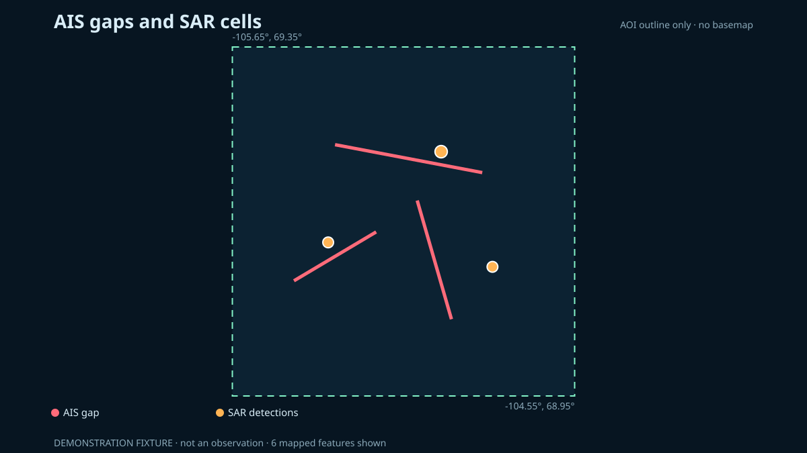

Layer C · Global Fishing Watch
AIS gaps and SAR-detection cells
The layer shows where provider algorithms record AIS gaps and where radar-derived vessel detections are aggregated. It does not infer why an AIS signal was absent.
Mappable gap events
—
Aggregated SAR detections
—
Minimum gap duration
12 h
Static fallback

Interpretation
An AIS gap can arise from reception conditions, equipment, coverage, interference or deliberate action. This project does not assign a cause. A SAR detection without an AIS match is labelled only as unmatched.
Principal limitations
- Satellite and terrestrial AIS reception is incomplete and uneven.
- Global Fishing Watch events are algorithmic estimates and can be missing or incorrect.
- SAR vessel detections can contain false positives.
- SAR coverage does not sample all water at all times.
- Global Fishing Watch applies its intended AIS-off criterion to gaps that start at least 50 nautical miles from shore. The study area measures about 44 km by 44 km and no point in it is more than 19 nautical miles from shore, so this project reports no inferred cause for any gap event here.
- Global Fishing Watch states that its SAR product leaves out much of the Arctic because sea ice produces false positives. A sparse or empty SAR layer can reflect provider coverage, eligibility or filtering; it is not evidence that no vessels were present.
- Loading caveats from the generated vessel summary.
These layers are unsuitable for navigation, enforcement or claims about an individual vessel’s conduct.
Reproduce this
Run the live pipeline’s vessels part or open
notebooks/04_vessel_events_gfw.ipynb in the project files. A Global Fishing
Watch API token is required.